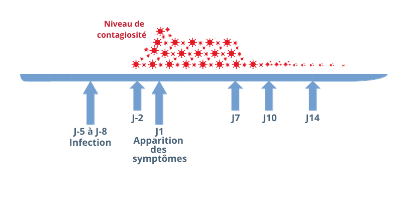

SARS-CoV‑2/Covid-19 – Point sur les connaissances
Que sait-on du virus SARS-CoV‑2 ?
Le SARS-CoV‑2 appartient à la famille des coronavirus (CoV), dénomination liée à la « couronne »
que forment certaines protéines à la surface de ces virus. Il a été identifié pour la première
fois à Wuhan en Chine, en décembre 2019.
Plusieurs coronavirus sont déjà connus pour être capables d’infecter les humains :
trois coronavirus saisonniers responsables de symptômes hivernaux sans gravité (rhumes),
le SARS-CoV responsable du syndrome respiratoire aigu sévère (SRAS) et le MERS-CoV responsable
d’une atteinte respiratoire potentiellement sévère (Middle East Respiratory Syndrome).Le SARS-CoV‑2 est le septième coronavirus pathogène pour l’Homme. Il est responsable de la maladie Covid-19 (COronaVIrus Disease 2019).
À gauche : des virus SARS-CoV‑2 accrochés aux cils de cellules épithéliales humaines en culture, observés par microscopie électronique à transmission. À droite : une cellule infectée par le virus. © Manuel Rosa-Calatrava, Inserm ; Olivier Terrier, CNRS ; Andrés Pizzorno, Signia Therapeutics ; Elisabeth Errazuriz-Cerda UCBL1 CIQLE.
SARS-CoV‑2 est un virus à ARN enveloppé, dont le génome (30 kilobases) code pour 15 gènes dont 4 correspondant à des protéines de structure : une protéine de surface (protéine Spike ou S), une protéine de membrane (M), une protéine d’enveloppe (E) et une protéine de nucléocapside (N).
Ce génome présente 79% d’homologie avec le SARS-CoV et 52% d’homologie avec le MERS-CoV. Le coronavirus dont il est le plus proche phylogénétiquement est RaTG13-CoV, un coronavirus qui infecte les chauves-souris (96% d’homologie).
Le SARS-CoV‑2 mute-t-il ?
D’une manière générale, les virus à ARN peuvent muter plus facilement que les virus à ADN. Cela tient à leur façon de répliquer leur génome lorsqu’ils se multiplient, un processus qui a tendance à générer des erreurs. Toutefois, comme d’autres coronavirus, SARS-CoV‑2 est plutôt stable car il possède une enzyme qui corrige ces erreurs (une exoribonucléase).
Depuis le début de l’épidémie, de très nombreuses mutations du SARS-CoV‑2 ont été décrites dans la littérature. Le plus souvent, il s’agit de la modification d’un seul nucléotide, mais des délétions de gènes sont aussi rapportées. La vaste majorité de ces mutations ne présente aucune caractéristique préoccupante. Toutefois, depuis fin 2020, plusieurs lignées de virus qui présentent des modifications problématiques sont apparues, comme :
- les variants Alpha (variant « britannique » ou B.1.1.7) et Delta (variant « indien » ou B.1.617.2), plus contagieux que la souche virale « historique »
- les variants Bêta (« sud-africain » ou B.1.351) et Gamma (« brésilien » ou P.1), a priori moins sensibles à l’immunité acquise grâce à un vaccin ou à une infection antérieure.
Quelle est son origine ?
L’origine du SARS-CoV‑2 n’est pas totalement élucidée. Particulièrement fréquents chez certains animaux, les coronavirus ne franchissent qu’épisodiquement la barrière d’espèces pour infecter l’Homme. Il existe cependant des exceptions, comme le SARS-CoV qui a été accidentellement transmis à l’Homme via la consommation de civettes masquées et le MERS-CoV via les dromadaires.
Le SARS-CoV‑2 est génétiquement plus proche des virus infectant les chauve-souris que du MERS-CoV ou du SARS-CoV. Mais, jusqu’à présent, aucune transmission virale directe n’a été décrite entre cette espèce et l’humain. C’est pourquoi les chercheurs estiment probable que la transmission à l’Homme a eu lieu par le biais d’une espèce hôte intermédiaire. Le pangolin a été initialement identifié comme porteur d’un coronavirus proche du SARS-CoV‑2, toutefois plusieurs éléments laissent douter de cette possibilité, notamment parce que les séquences génétiques du virus responsable de l’épidémie actuelle et celles du coronavirus qui infecte le pangolin conservent des différences significatives.
- le virus aurait été transmis de la chauve-souris à l’Homme via une espèce animale non encore identifiée.
- le virus aurait circulé depuis plusieurs années chez l’Homme, à bas bruit, jusqu’à ce qu’une mutation récente l’ait rendu plus virulent et pathogène.
Comment ce virus se transmet-il ?
Le SARS-CoV‑2 se transmet depuis une personne infectée vers une personne non infectée par deux voies principales :
- le contact direct avec la personne infectée ou une surface qu’elle a contaminée
- la transmission aérienne (ou aéroportée) du virus via des gouttelettes ou un aérosol émis par la personne infectée
Des gouttelettes (1 µm à 1 mm) sont émises par notre bouche et notre nez lorsque nous parlons, crions, chantons, toussons ou éternuons. Les aérosols correspondent quant à eux à des suspensions de particules plus petites (quelques nanomètres à 100 µm), à l’image de la vapeur produite par notre respiration par temps froid. Il existe en réalité un continuum entre gouttelettes et aérosol qui, dans la pratique, rend artificielle la distinction entre ces deux modes de vectorisation du virus.
Concrètement, en l’absence de masque, une personne infectée émet des gouttelettes chargées de virus, dont les plus grosses se déposent par gravité sur les surfaces à proximité immédiate. Une personne saine peut alors s’infecter en touchant la zone contaminée avec les mains puis en les portant à sa bouche, son nez ou ses yeux. Le virus peut persister plusieurs heures sur une surface inerte contaminée. La durée de sa persistance varie selon la nature de la surface, les conditions de température, d’humidité et de luminosité environnantes.
Mais ce n’est pas tout : plus le diamètre des gouttelettes émises par la personne infectée est faible, plus ces gouttelettes peuvent être entraînées à distance par l’air ambiant, et y rester en suspension. Le virus peut ainsi s’accumuler dans l’air intérieur d’un local mal ventilé et conduire à sa transmission aéroportée.
Le virus est rarement présent dans:
- le sang
- le sperme
- les sécrétions vaginales
- les urines
- les selles
En réalité, cette situation concernerait essentiellement des personnes qui ont développé une forme grave de la maladie. Quoi qu’il en soit, aucun cas de transmission par ces différentes voies n’a été rapporté. Par ailleurs, les cas de transmission intra-utérine (au cours d’une grossesse, voir plus loin) sont exceptionnels et le virus n’a pas été identifié dans le lait maternel.
Quand est-on contagieux ?
Il se déroule en moyenne 5 à 8 jours entre l’infection par le virus et la possibilité de le transmettre à un tiers, que l’on développe des symptômes ou non. Le risque de transmission est maximal à l’apparition de ces symptômes (lorsqu’on en a), mais il débute en moyenne 2 à 3 jours avant. Ce risque diminue ensuite progressivement à partir du 7e jour suivant l’apparition des symptômes. Il devient limité au-delà de 10 jours et exceptionnel après 14 jours. Attention, ces durées ne sont que des moyennes et peuvent varier selon la lignée du virus considéré : globalement, plus les symptômes sont sévères et persistent, plus la possibilité de transmettre le virus se prolonge.
Il se déroule en moyenne 5 à 8 jours entre l’infection par le virus et la possibilité de le transmettre à un tiers, que l’on développe des symptômes ou non. Le risque de transmission est maximal à l’apparition de ces symptômes (lorsqu’on en a), mais il débute en moyenne 2 à 3 jours avant. Ce risque diminue ensuite progressivement à partir du 7e jour suivant l’apparition des symptômes. Il devient limité au-delà de 10 jours et exceptionnel après 14 jours. Attention, ces durées ne sont que des moyennes et peuvent varier selon la lignée du virus considéré : globalement, plus les symptômes sont sévères et persistent, plus la possibilité de transmettre le virus se prolonge.
Il se déroule en moyenne 5 à 8 jours entre l’infection par le virus et la possibilité de le transmettre à un tiers, que l’on développe des symptômes ou non. Le risque de transmission est maximal à l’apparition de ces symptômes (lorsqu’on en a), mais il débute en moyenne 2 à 3 jours avant. Ce risque diminue ensuite progressivement à partir du 7e jour suivant l’apparition des symptômes. Il devient limité au-delà de 10 jours et exceptionnel après 14 jours. Attention, ces durées ne sont que des moyennes et peuvent varier selon la lignée du virus considéré : globalement, plus les symptômes sont sévères et persistent, plus la possibilité de transmettre le virus se prolonge.
Et les enfants ? Au regard de l’épidémiologie en France ou dans d’autres pays, ils semblent jouer un rôle limité (notamment lorsqu’ils ont moins de 10 ans), mais non nul, dans la transmission de SARS-CoV‑2. On estime probable que les enfants aient en outre moins de risque d’être infectés que les adultes lorsqu’ils sont en contact avec une personne contagieuse.
Comment l’infection par le virus se déroule-t-elle ?
Le virus pénètre dans l’organisme via les voies aériennes, depuis le nez et la bouche. Une partie de sa protéine de surface (la région RBD de la protéine S) se fixe au récepteur ACE2 exprimé à la surface des cellules qui tapissent nos voies respiratoires. Une autre protéine cellulaire (TMPRSS2) permet ensuite au virus de pénétrer dans la cellule. Une fois à l’intérieur, il utilise la machinerie cellulaire de l’hôte pour s’y multiplier. De nouveaux virions se forment et vont infecter de nouvelles cellules.
Ainsi, l’affinité de la liaison entre la protéine S et le récepteur ACE2 détermine le niveau de la réplication virale et la sévérité de la maladie. Bloquer expérimentalement le récepteur ACE2 ou TMPRSS2 permet d’empêcher le virus de pénétrer dans les cellules et se répliquer.
Le récepteur ACE2 est présent à la surface d’autres cellules que celles du tissu respiratoire, comme au niveau du système digestif, du cœur ou des vaisseaux sanguins… Ceci explique vraisemblablement l’existence de symptômes extrapulmonaires. Mais le mécanisme par lequel les récepteurs ACE2 sont activés au niveau de ces organes reste à déterminer.
Comment notre organisme réagit-il à cette infection ?
L’infection déclenche rapidement la production de molécules impliquées dans l’inflammation, un moyen naturel de lutte contre les infections : des cytokines (IL‑6, IL‑8, IL-10…) et d’autres médiateurs (TNF-alpha). Ces molécules exercent une action antivirale locale et attirent des cellules immunitaires capables d’éliminer les cellules infectées.